The big, blue-eyed cat that collapses in your arms —and follows you to the bathroom. | 2026-07-01 MeltPet 5 min read
Last updated: 2026-07-07

The cat that goes limp in your arms — and follows you everywhere.
My Friend's Ragdoll Melts Into the Floor Like a Furry Pancake. It's Deliberate.
I visited my friend Jenna last year. She opened the door, and behind her, sprawled across the entryway rug like a discarded scarf, was a cat. Not a small cat —a 15-pound cream-colored cat with electric-blue eyes and a coat that looked like spun silk. I stepped over him. He didn't move. I leaned down to pet him, and when I picked him up, his entire body went slack. Head back. Paws dangling. Like a stuffed animal with the stuffing removed.
"That's the Ragdoll thing," Jenna said. "He does that."
Ragdolls are the second most popular cat breed in the world, behind only the Persian. They're also the breed most likely to be described by owners as "more like a dog" —but in a completely different way than Maine Coons. A Maine Coon follows you like a loyal retriever. A Ragdoll collapses into you like a weighted blanket that purrs. The difference matters more than you'd think.
What a Ragdoll Actually Is
Ragdolls are a relatively new breed. They were developed in the 1960s in Riverside, California, by a breeder named Ann Baker, who started with a white longhaired cat named Josephine and selectively bred for size, colorpoint markings, and that signature docile temperament. The breed exploded in popularity through the 1990s and 2000s and now accounts for a significant share of all pedigreed cat registrations worldwide.
The classic Ragdoll look: large (males 12–20 lbs, females 10–15), semi-longhaired coat with no dense undercoat, blue eyes (always —the breed standard requires them), and a colorpoint pattern —a pale body with darker face, ears, legs, and tail. The points come in seal, blue, chocolate, lilac, red, and cream, with pattern variations (mitted, bicolor, colorpoint). They reach full size around age 3–4, like Maine Coons. They're substantial cats —not delicate —with broad chests and heavy bone.
But people don't buy Ragdolls for the colorpoints. They buy them for what the breed is famous for: the temperament.
The Personality: Follow You, Flop on You, Need You
Trait
Rating
What That Actually Means
Affection level
⭐⭐⭐⭐
Will be on your lap within 30 seconds of you sitting down. Every time. No exceptions.
Trainability
⭐⭐⭐⭐
Can learn fetch, come when called, and walk on a harness. Food-motivated and eager to please —unusual for a cat.
Energy level
⭐⭐
Playful in bursts, especially as kittens. Adults have a zoomie session or two each day and then nap for four hours.
Vocalization
⭐⭐
Quiet. Soft chirps and trills, not loud yowling. You'll learn to listen for the small sounds.
Independence
This is the thing nobody tells you. Ragdolls hate being alone. This breed gets depressed without company.
Kid-friendly
⭐⭐⭐⭐
Exceptionally patient. The limp-when-held thing makes them easier for kids to carry safely. Supervise anyway.
Here's the reality that Ragdoll breeders don't always lead with: this is a needy breed. A Ragdoll doesn't just enjoy your company —it requires it. Leave a Ragdoll alone for 10 hours a day, five days a week, and you'll have a problem. Not a "scratched furniture" problem —a "cat has stopped eating and the vet can't find anything physically wrong" problem. Ragdolls bond intensely with their people and decline without them. If your lifestyle means long hours away from home, either get two Ragdolls so they have each other, or choose a breed with more independence —a British Shorthair or a Russian Blue will handle solitude far better.
They're also not subtle about wanting attention. A Ragdoll will sit on your keyboard while you work. It will lie on your book while you read. It will follow you into the bathroom and sit on the bath mat staring at you —not out of anxiety, but out of a genuine belief that wherever you are is where the best things happen. If you want a cat that respects your personal space, this is the wrong breed.
The Coat: Easier Than It Looks, Harder Than They Claim
Ragdolls have a semi-longhaired coat with no dense undercoat —which means they shed less and mat less than a Persian or a Himalayan. That's the good news. The realistic news: the fur is long, silky, and still mats. Behind the ears, in the armpits, along the britches on the back legs —these spots need weekly attention with a metal comb. If you skip a week, you'll spend 20 minutes working out tangles. Skip a month and you're cutting mats out with scissors, which is stressful for everyone involved.
Ragdolls generally tolerate brushing well —start when they're kittens, pair it with treats, and they'll purr through the whole thing. Bathing is rarely needed; the coat is somewhat dirt-resistant. During shedding season (spring and fall), daily brushing keeps the fur tumbleweeds from taking over your floors. A good slicker brush and a wide-toothed metal comb cover 95% of your grooming needs. Budget $15–30 for the tools, five minutes a day for maintenance.
Health: HCM Is the One That Keeps Breeders Up at Night
Hypertrophic cardiomyopathy. It's the same genetic heart disease that affects Maine Coons, and Ragdolls have their own version of the mutation on the MYBPC3 gene. The heart muscle thickens, pumping becomes less efficient, and the endgame is heart failure, blood clots, or sudden death —often in a cat that seemed perfectly healthy the week before.
A DNA test exists and any breeder should run it on both parents. But —and this is the part breeders sometimes gloss over —the DNA test only catches the one known mutation. It doesn't cover every case. A negative DNA test reduces the risk. It doesn't eliminate it. The gold standard for breeding cats is an annual cardiac ultrasound by a board-certified veterinary cardiologist. A breeder who runs only the DNA test and skips echocardiograms is cutting corners in a way that could mean the difference between a cat that lives to 15 and one that dies at 5.
Beyond HCM: bladder stones —specifically calcium oxalate stones, which can't be dissolved with diet and require surgical removal ($1,500–3,000). Some lines have a higher incidence. Ask the breeder if any of their cats or kittens have had stones. A breeder who says "never" is either lying or hasn't been breeding long enough to know. And polycystic kidney disease, while less common in Ragdolls than Persians, does appear. A good breeder screens for it.
Lifespan: 12–17 years for a well-bred Ragdoll from health-tested parents. The maintenance costs —quality food, annual vet visits, pet insurance —are similar to any large cat: roughly $60–100 per month for basics, excluding emergencies.
Ragdoll vs Maine Coon: Both Big, Completely Different
People compare these two because they're both large, longhaired cats with dog-like personalities. But the experience of living with each is completely different:
Ragdoll
Maine Coon
Size
10–20 lbs
10–15 lbs
Coat
Silky, no dense undercoat
Heavy double coat, seasonal shed
Personality
Lap cat. Velcro. Needs you.
Nearby cat. Follows but doesn't cling.
Vocalization
Soft chirps, quiet
Chirps and trills, more talkative
Grooming
Weekly comb, moderate
2x/week comb, heavier shedding
Independence
Low —hates being alone
Moderate —prefers company, tolerates alone time better
Main health risk
HCM, bladder stones
HCM, hip dysplasia, SMA
Purchase price
$1,200–2,500
$1,500–3,000
If you want a cat that lives on your lap and acts like a living stuffed animal, get a Ragdoll. If you want a cat that's more independent but still social —more like having a quiet roommate who checks in occasionally —get a Maine Coon. Both are great. Neither is low-maintenance.
📚 Sources
Peer-reviewed veterinary research on Ragdoll genetics and health.
Meurs, K.M., et al. (2007).A cardiac myosin binding protein C mutation in the Ragdoll cat. Journal of Veterinary Internal Medicine.
Borgeat, K., et al. (2014).The influence of breed on feline hypertrophic cardiomyopathy. Journal of Veterinary Cardiology.
Ragdoll Fanciers' Club International.Health & Genetics. rfci.org
TICA (The International Cat Association).Ragdoll Breed Standard & Health Screening Guidelines. tica.org
📖 Related
Cat Breed Finder —not sure about Ragdolls? Take the 6-question quiz